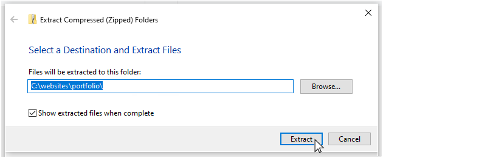

Introduction
In this Tutorial you will add two completed projects to your website, and update your Portfolio and Home web pages accordingly.
Downloading the project ZIP file
Your first step is to download the files you need for your two projects.
- Download the following compressed file to your computer:
two-projects.zip
This is large file which contains a video. So it may take a few minutes to download.
- Copy the ZIP file into your websites/portfolio folder.
- Begin uncompressing the ZIP file - but change the location into where the project files will be unzipped.
The ZIP file will suggest unzipping the files into a new sub-folder named two-projects.zip of your websites/portfolio.
In the unzipping dialog box, edit this location to the websites/portfolio sub-folder.

- This will create two new project sub-folders in your portfolio folder:
/vincent-van-gogh and
/hero-showcase
Each of these two project folders has its own sub-folders for storing the images and stylesheet it needs.
That's it. No more further downloads are required.
Updating the two project web pages
You will need to make a few updates to the head and footer sections your two project web pages. Follow these steps.
- In VS Code, open the index.html files in the portfolio/hero-showcase and portfolio/vincent-van-gogh sub-folders.
- For each of the two web pages, make the following updates:
- In the two head sections, replace "Mary Smith" with your own name, and enter your unique Google Analytics ID in the two locations instead of "GGGGGG".
- In the two footer sections, again replace "Mary Smith" with your own name. Also, update or remove the social media contact points
- At the very bottom of the web page, in the JavaScript code for the privacy pop-up message, replace the fake website address with your own.
- When finished, save the two index.html files.
View the two web pages in your browser and verify they are working correctly. You can close these two files when finished.
Updating your Portfolio web page
Now that you have added two portfolio projects to your website, you can showcase them on your Portfolio web page.
- In VS Code, open the index.html file in the portfolio sub-folder of your 'main' assets folder.
- Under the hero block section you can see a <div> block with the two class names of container text-center.
- Directly under this introduction block, and above the footer section, click and press the Enter key a few times to open up some blank lines.
- In this empty space, copy-and-paste the following.
<div class="container">
<div class="row">
<div class="col-md-10 offset-md-1">
<div class="row">
<div class="col-md-6 text-center">
<a href="vincent-van-gogh/index.html"><img src="vincent-van-gogh/assets/img/van-gogh.png" alt="Vincent van Gogh" class="img-fluid"></a>
<p>A <a href="vincent-van-gogh/index.html" class="fancy-link">tribute</a> to the Dutch post-impressionist painter with an embedded YouTube video and set in the Google Merriweather font.</p>
</div>
<div class="col-md-6 text-center">
<a href="hero-showcase/index.html"><img src="hero-showcase/assets/img/hero-showcase.png" alt="Vincent van Gogh" class="img-fluid"></a>
<p>A <a href="hero-showcase/index.html" class="fancy-link">gallery</a> of web page hero blocks with animated text, background images and videos, and tinted ovelays.</p>
</div>
</div>
</div>
</div>
</div>
- Save your index.html file.
In your web browser, verify that the two project images display, and that the links to your two project web pages work corrrectly. You can close the file when finished.
Updating your Home web page
Finally: a few changes to the Home page of your website.
- In VS Code, open the index.html file that is the Home page of your personal website.
- Under the hero block section you can see a <div> block with the two class names of container introduction-text.
- Replace the content of this <div> with the following text or similar.
<h1>Welcome</h1>
<p>My name is Mary Smith. I’m a web designer who loves to build human-friendly interfaces and digital experiences.</p>
- Replace the name "Mary Smith" with your own. Enter whatever text you feel is appropriate for your website.
- Save your index.html file.
In your web browser, verify that your Home page looks correct on large and mobile screen sizes. You can close the file when finshed.
Uploading your website to GitHub
The final step is to upload your website pages and folders to GitHub.
- Sign in to your GitHub account and, at the left of the screen, click the name of the repository that holds your web pages.
- On the next screen, click the Add file button and then choose Upload files from the dropdown list.

- In File/Windows Explorer on your computer, display your websites folder and then drag-and-drop the following files and sub-folders to the GitHub tab in your web browser.

- Scroll down to the bottom of the GitHub screen, and accept or edit the short message (Add files via upload) in the Commit changes box.
Finally, click the green Commit changes button to upload your files and folders.
Your Portfolio web page is now published on GitHub, at an web address similar to the following, where username is the username you have chosen for your GitHub account:
https://username.github.io/portfolio
It may take a few minutes for your uploaded files to appear on GitHub.
Return to Contents.